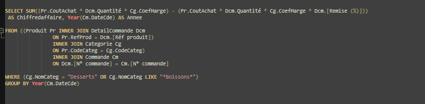
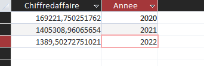

3) Dans une réflexion en lien avec la santé : On veut comme indicateur le chiffre d'affaires généré (montant total des ventes) annuel pour les catégories desserts ou boissons.
Requête SQL :

Résultat :
